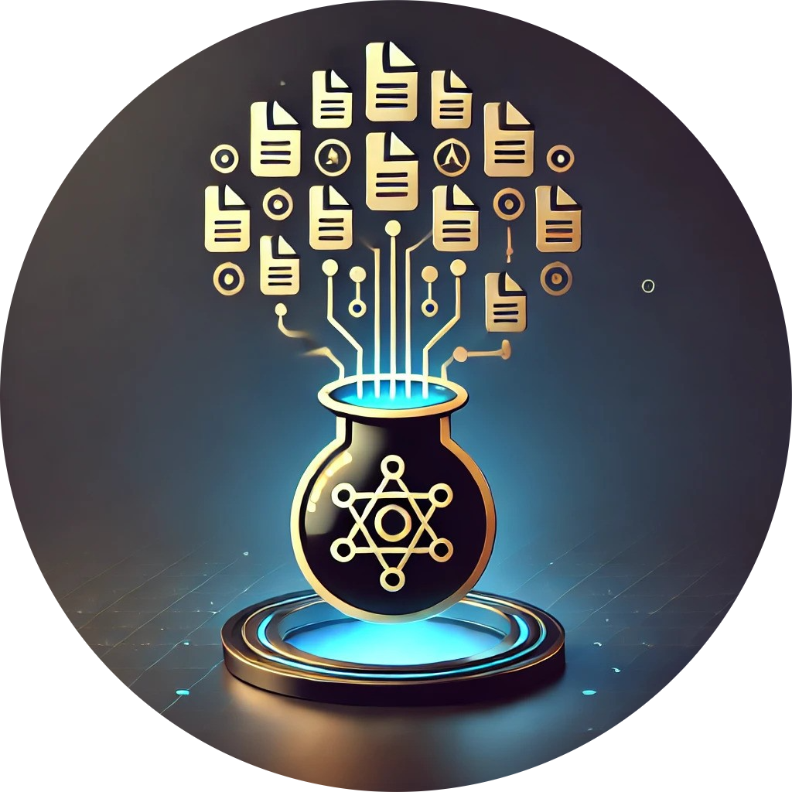

⚡ FileAlchemy
Transform Any File Format with FileAlchemy
Convert documents, images, audio, and video files instantly with our advanced conversion platform.
Whether you need to extract audio from videos, convert HEIC photos to other formats, or transform documents to different formats, FileAlchemy has you covered.
Why Choose FileAlchemy?
- üìÇ Convert between 50+ file formats with perfect accuracy
- üé¨ Extract high-quality audio from video files in multiple formats
- üì± Full support for HEIC images from modern smartphones
- üîí Secure local processing - your files never leave your device
- üöÄ High-performance conversions with advanced algorithms
- üí° Simple, intuitive interface with real-time progress tracking
- üí™ Preserve quality and dimensions during all conversions
- üîÑ Multiple conversion methods with intelligent fallbacks
Understanding File Conversion Technology
FileAlchemy uses cutting-edge technologies to deliver the highest quality file conversions. We employ a multi-layered approach for each file type:
- ✓ Native Libraries - Primary conversion using specialized libraries for maximum fidelity
- ✓ FFmpeg Integration - Professional-grade media processing for audio and video
- ✓ Format-Specific Algorithms - Tailored processing for each conversion type
- ✓ Intelligent Fallbacks - Multiple conversion methods ensure success even with challenging files
- ✓ Quality Preservation - Maintain original dimensions, resolution, and format attributes
Our platform supports a comprehensive range of file formats, including:
How Our Conversion Technology Works
üñºÔ∏è Image Conversion Technology
Our image conversion engine uses a multi-layered approach:
- Python Imaging Library (PIL/Pillow) - Primary conversion engine for most image formats
- Pillow-HEIF - Specialized support for HEIC/HEIF images from modern smartphones
- FFmpeg - Advanced processing for challenging image conversions
- Dimension & Quality Preservation - Intelligent algorithms maintain original image attributes
- Multiple Fallback Methods - If one conversion approach fails, the system tries alternatives
üéµ Audio Extraction Technology
Our audio extraction system provides high-quality results through:
- MoviePy - Primary audio extraction from video files with high fidelity
- FFmpeg - Professional-grade fallback for challenging video files
- Direct Conversion - Format-specific optimizations for each audio format
- Quality Preservation - Maintain original audio quality during extraction
üìÑ Document Conversion Technology
Our document conversion system utilizes:
- PyMuPDF - Advanced PDF manipulation and conversion
- python-docx - Word document processing with formatting preservation
- WeasyPrint - High-quality HTML to PDF conversion
- Multiple Processing Engines - Format-specific processing for optimal results
How FileAlchemy Works
Step 1: Upload Your File
Select a file from your device or drag and drop it into our converter. We support files up to 100MB.
FileAlchemy accepts 50+ different file formats including HEIC images and all video formats.
Step 2: Choose Target Format
The system will automatically detect your file type and show you all possible conversion options.
Select your desired output format from the available options.
Step 3: Convert & Download
Our advanced algorithms will convert your file using the optimal conversion method.
Download your converted file instantly and enjoy high-quality results!
Why FileAlchemy Outperforms Other Converters
Our platform stands out with these exceptional features:
- ✅ Advanced HEIC Support – Convert iPhone's HEIC images with perfect quality preservation
- ✅ Multi-Method Conversion – Multiple conversion paths ensure success with any file
- ✅ Dimension Preservation – Images maintain original resolution and aspect ratio
- ✅ Full-Quality Audio Extraction – Extract high-fidelity audio from any video format
- ✅ Local Processing – All conversions happen on your device for maximum privacy
- ✅ Format-Specific Optimizations – Each conversion uses format-specific settings for best results
- ✅ Intelligent Fallbacks – If one method fails, the system tries alternatives
- ✅ Real-Time Progress Tracking – See the status of your conversion as it happens
- ✅ Seamless Audio Conversion – Convert between all major audio formats with perfect quality
Our Quality Guarantee
At FileAlchemy, we're committed to providing the highest quality conversion service. Every conversion uses multiple processing methods to ensure optimal results, and our system constantly adapts to handle even the most challenging files.